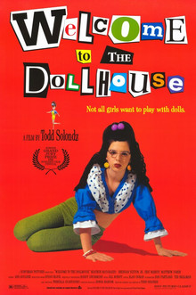

Todd Solondz
1995
87 minutes
TITLE: Welcome to the Dollhouse TEXT PLACEHOLDER 129
It is hardly surprising that you have an enormous crush on Heather Matarazzo. Of course you do.
It is hardly surprising that most of the women you have dated were basically Dawn Weiner when they were in middle school. Of course they were.
It is hardly surprising that back before you met your belated Dawn-Weiner-in-middle-school wife, you ended up watching this film with multiple other women who were basically Dawn Weiner when they were in middle school. This resulted in a lot of trauma and shed tears.
Until recently, this was one of the few movies you owned on VHS. This was not intentional. The bad movie night you attend once a month had a "Santa" come in to distribute VHS tapes to the crowd to all the good/naughty boys and girls who showed up to watch whatever terrible movie was on tap that month. This film was hurled at your head by a foul-mouthed evil Santa. You caught it and took it home as a relic despite having nothing to play it on.
You are watching this film because you traded it away to someone who hadn't seen it and didn't know what it was but happened to have a VHS player with nothing to watch on it. This was not a Gen-X person, and it had been a while since you had seen the film. Not knowing the person very well, you decided to do due diligence and give the film another watch so you could pass along the proper content warnings your generation once scoffed at.
It's still a pretty rough watch for a film where the worst that happens is some horrific bullying.
In what passes for a happy ending to your real life story, the person you passed it onto seemed to enjoy it and wasn't completely horrifically traumatized by it.
Time to choose something different: